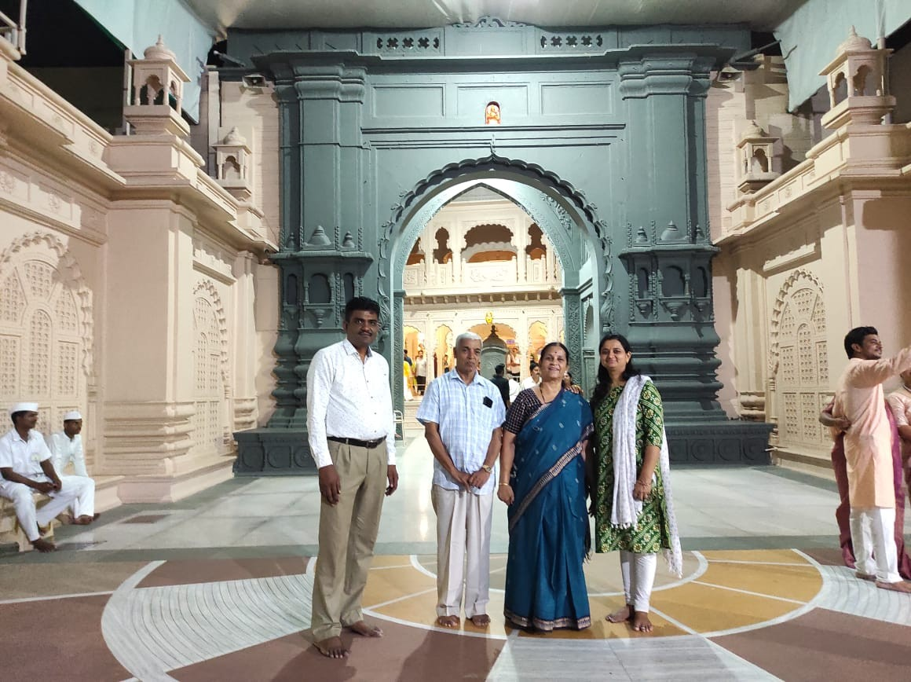
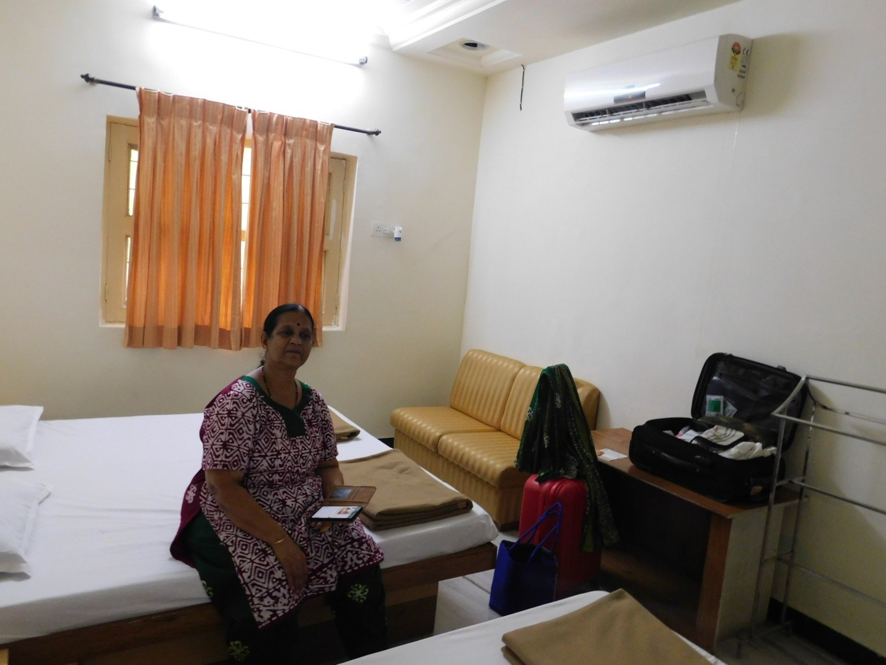
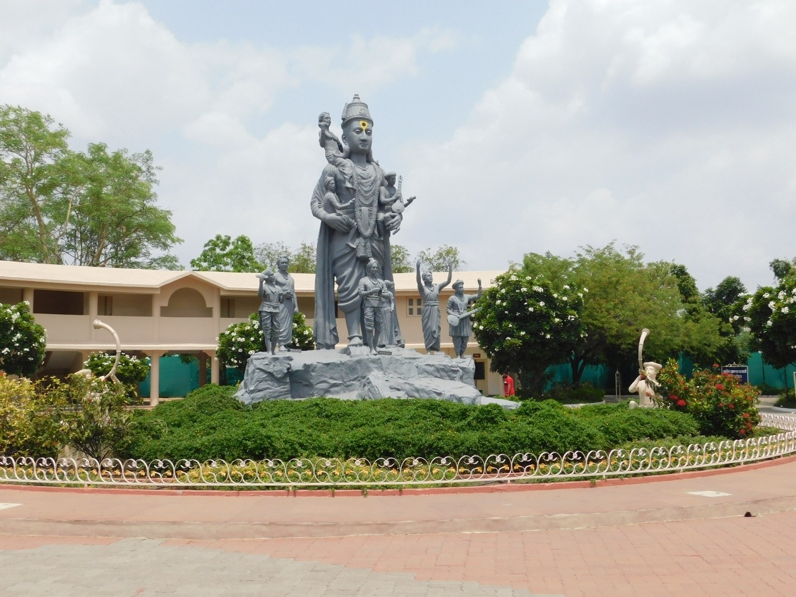
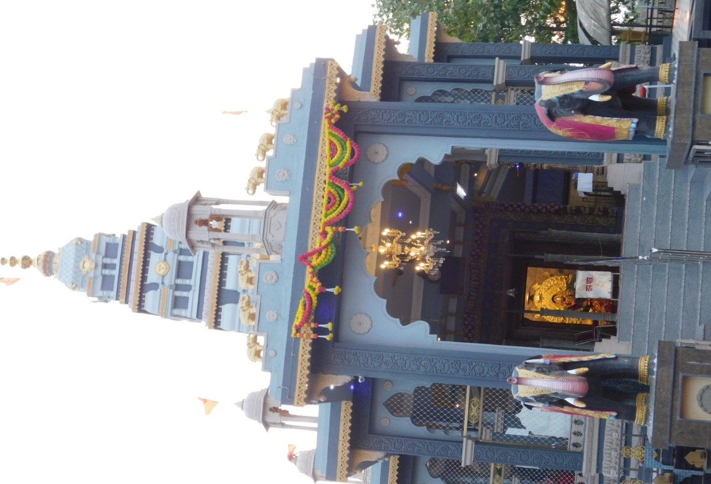
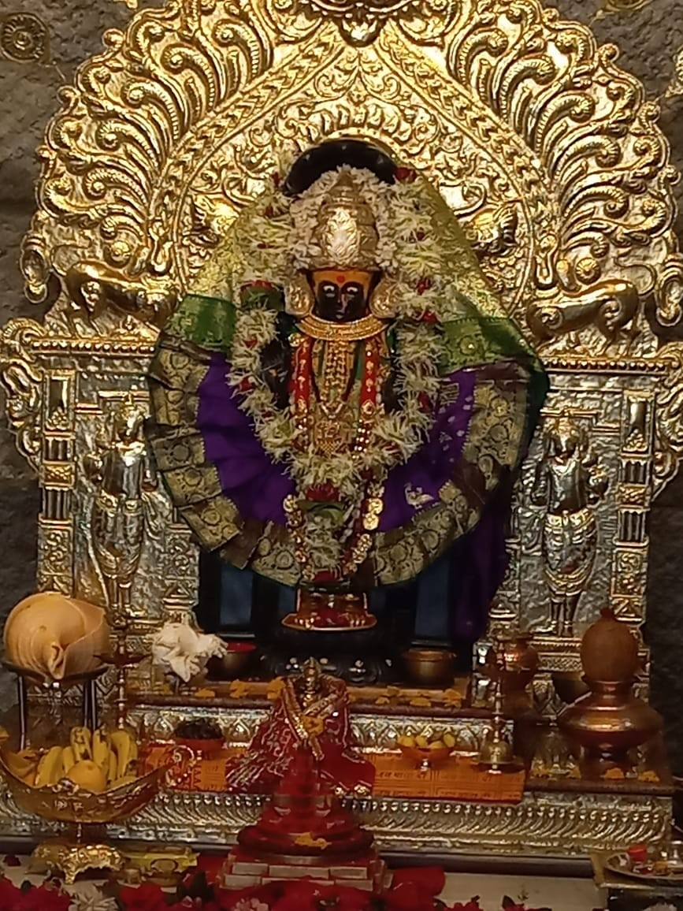
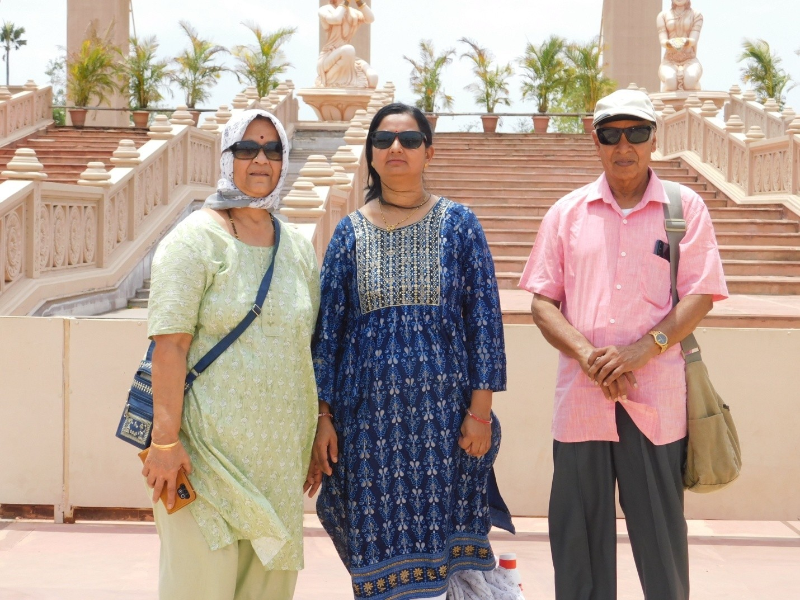
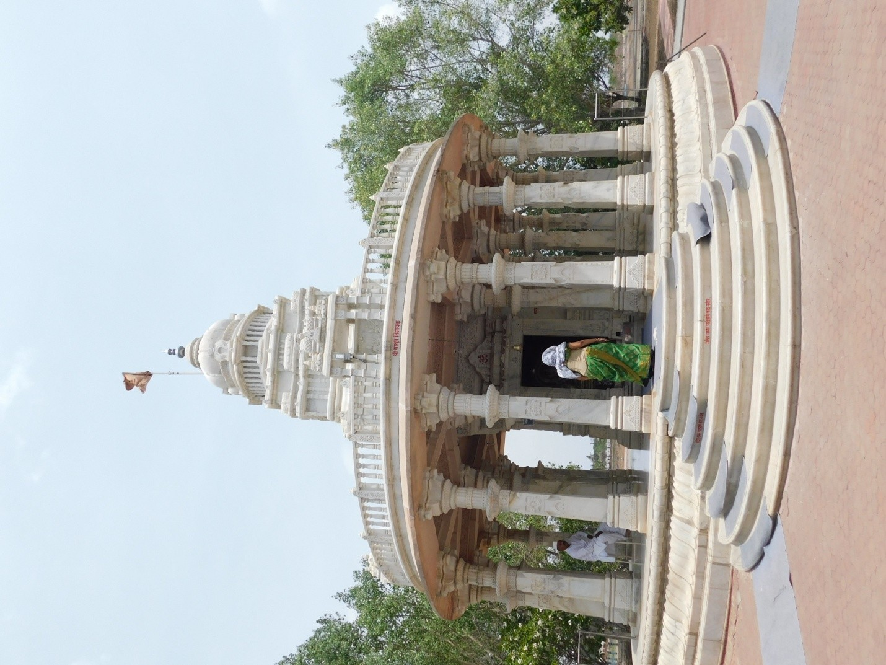
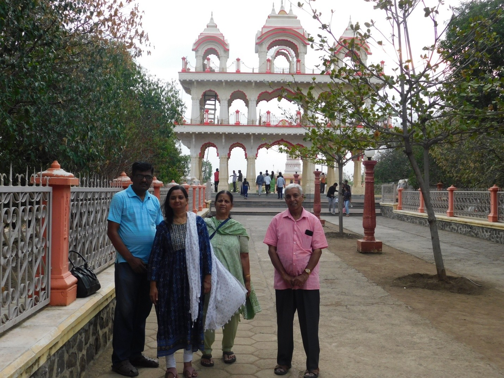

Left home by 8 pm. Surprisingly, Uber arrived a minute after booking. The train name is Pune Amravati Express Special. Pune station was very crowded. As usual, only at the eleventh hour did they announce the boarding platform number. Fortunately, it was the first platform, so we did not need to run around. It was supposed to leave at 9:55 pm, but it was delayed by 20 minutes.
Had a good sleep on the train. I only got up in the morning and realized that the train was running late by almost 3 hours. No tea! It seems the Railway stopped all unauthorized vendors from selling things on the train. I didn't see any vendors throughout the journey. This train doesn't have a pantry car, so neither train service nor local services were available.
One surprising thing is the cleanliness. Train stations are well-maintained. Nowhere were there heaps of garbage. At last, we reached Shegaon around 10 am. The station was very clean. In this region, all stations have ramps apart from the staircase to cross railway lines. So, one need not struggle to lift suitcases; we can drag them.
Lakshmi had a cup of tea. Shekhar came to receive us. His home is around 5 km from the station and is well-kept. A small garden is maintained on the front side. The weather is quite hot—more than in Pune. Now, Pune’s temperature is around 30°C, but here it is above 40°C. In Shekhar's home, they have one air cooler and a split AC.
Anuradha is always cordial and welcoming. She made a nice lunch of dal, chapati, potato subji, and mango pulp. Shekhar, after leaving us at home, left for the college. In the afternoon, Lakshmi was interacting with Anu while I took some rest. In the evening, Shekhar returned from college and Avanti also came back from school.

This temple is dedicated to Saint Gajanan Maharaj. A proper queue system is in place, and it was moderately crowded. In most places, AC and air coolers were kept. We stood for about 20 minutes in the queue. The temple is made out of marble. Around the temple, beautiful accommodation facilities are provided. Here, rooms are booked on a day-to-day basis; online booking is not available. These accommodations are meant exclusively for people visiting the temple.
After darshan, we took Mahaprasad in the temple. We returned home around 9:30 pm. Sekar spared his bedroom for us. In spite of repeated requests, he compelled us to take it since that room had AC. Even though the AC was on, it was quite hot at night. The temperature must have been around 40°C. However, the morning weather was a little bit cooler, and I could sleep for a few hours. Tomorrow morning, we go to Anand Sagar, the other part of this sansthan.

I got up around 7 am. Anuradha made tea. After a bath, Anuradha made a nice breakfast. She made dhokla; it was quite good. We also had kachori bought from outside. In Shegaon, they prepare and sell them in every nook and corner. It is famous here. It is true that these kachoris are different from Pune kachoris!

Around 10 am, we left for Anand Sagar. It is just half a kilometer from Shekhar's home. Here, different types of rooms are available: AC rooms, non-AC rooms, and dormitories. We took an AC room as we wanted the ground floor. At last, we got an AC room on the ground floor. In this room, there are three beds, a split-type AC, and an attached bath. There are also rooms with common bathrooms. We occupied the room around 10:30 am.

The room charge is very nominal; they charge Rs 900 per day. While booking, they book for only one day, but we can extend if we want to stay more days. The whole premises is very clean; even dry leaves are picked up now and then. In the premises, canteens are available where they also charge very nominally. Since the whole place is green and clean, it is the best place for walking. Only thing is, we should avoid summer.

Anuradha came to our room around 11:30 am. In the canteen, lunch is served from 11:30 am to 2 pm. Around 1 pm, we went to the canteen. For lunch, they serve chapati, dal, subji, and a sweet similar to sheera. Rice is also served. After lunch, we took rest until 3 pm and then went around Anand Sagar.
After tea, we walked to Anand Sagar from Anand Vihar (where we stayed). It is about 2 km. Auto-rickshaws are also available. But when we reached there, it was closed. It is kept open only from 10 am to 4 pm. Then, from there, we proceeded to the Mahalaxmi temple. It is about 2 km from Anand Sagar. This temple is a newly constructed one.
Then we came to Shekhar's home, and Anuradha made khichdi and kadhi. After dinner, we returned to our room. Shekhar dropped us off. Even though the ambient temperature was above 40°C, because of the AC, the room was quite chill and I slept well the whole night.

I got up around 7 am. Had coffee and did a little walking. Shekhar came to the room around 8 am. We all went to the temple again. Being Thursday, there was a big queue. We stood for about an hour and had darshan.

Around 10 am, Shekhar dropped us at home. Anuradha, Avanti, and we took an auto and went to Anand Sagar. It was open only partially. Since the canteen of Anand Vihar was closed by 11 am, we could not take breakfast there. We took kachori from a roadside stall (it seems kachori is the main food of Shegaon people). It was good and cheap. We saw the Ganesh temple and Shiva temple. Most of the other things, like the lake, were under renovation.

After that, we returned to our room. In the canteen, we took lunch and rested. In the evening, we had coffee. Shekhar came back around 5:30 pm.
Then we went to Nagazari to visit Gomati Maharaj, the Guru of Gajanan Maharaj. It is about 10 km from our room. Then we went to Bhangat Sadan. In this place, Gajanan Maharaj lived and performed miraculous things. Then we proceeded to Krishnaji Mala; he was also a Saint and did miraculous things. There, they provided us food. Then we proceeded to Shekhar's home and had milk before returning to our room.
In the morning, we walked around 3 km within the premises. There was a long queue for breakfast. I stood in the queue and had upma. By 9:30 am, Shekhar came and took us to his home. Anu also gave us breakfast again. Around 1 pm, we had our lunch. Anu prepared an elaborate lunch: puran poli with milk, rasmalai, special brinjal masala, dal, chapati, rice, and curd. After the delicious lunch, we rested until 4 pm.
Around 6:30 pm, we went to the station with Anu and Shekhar. On the way, Shekhar bought kachori for us and also bought fresh groundnuts. The train was on time. Shekhar helped us in shifting the suitcases onto the train. The journey was good. The train reached Pune the next morning—actually, it reached before the scheduled time. We took an auto and reached home around 7 am.
Overall, the trip was good and memorable. From the spiritual serenity of Gajanan Maharaj’s marble temple to the lush, well-maintained landscapes of Anand Sagar, Shegaon left a lasting impression. Despite the intense summer heat exceeding 40°C, the warmth of Shekhar and Anuradha’s hospitality, the delicious local kachoris, and the efficient cleanliness of the city made this a truly special experience.